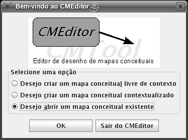

Na barra de menus, clique em Arquivo e em Salvar.
No teclado, segure a tecla Ctrl e tecle S.
Na barra de ferramentas, clique no botão  .
.
Após desenhar seus mapas conceituais, você deve salvá-los. Para saber como fazer isso, bem como abrir os mapas salvos, leia os passos abaixo.
Para salvar um mapa conceitual, há 3 opções:
Na barra de menus, clique em Arquivo e em Salvar.
No teclado, segure a tecla Ctrl e tecle S.
Na barra de ferramentas, clique no botão .
O diálogo abaixo surgirá.
Escolha uma pasta no seu computador, escreva o nome do arquivo e clique em Salvar. O mapa estará salvo no formato XML, o formato adotado pelo CMEditor.
Assim que você salvar seu mapa pela primeira vez, não surgirá mais o diálogo, pois um nome já foi dado ao mapa.
É recomendável que você sempre salve seu mapa conceitual periodicamente, para evitar perdas.
Assim que você salva ou abre seus mapas, uma lista de arquivos recentes é atualizada. Ela pode ser acessada na barra de menus, clicando em Arquivo e em Arquivos recentes. Clicando em um elemento da lista, o mapa será aberto.
Depois que você salvar seu mapa, poderá abrí-lo em qualquer outro computador que tenha o CMEditor. Há quatro maneiras de abrir um mapa conceitual salvo:
Assim que você executar o CMEditor, surgirá o diálogo abaixo.

Nele escolha a opção "Desejo abrir um mapa conceitual existente" e clique em OK.
Na barra de menus, clique em Arquivo e em Abrir.
No teclado, segure a tecla Ctrl e tecle O.
Na barra de ferramentas, clique no botão  .
.
Em todas as opções acima, surgirá um diálogo para que você procure nos vários locais do seu computador um arquivo.
Escolha o arquivo do seu mapa e clique em Abrir.
Assim que você salva ou abre seus mapas, uma lista de arquivos recentes é atualizada. Ela pode ser acessada na barra de menus, clicando em Arquivo e em Arquivos recentes. Clicando em um elemento da lista, o mapa será aberto.